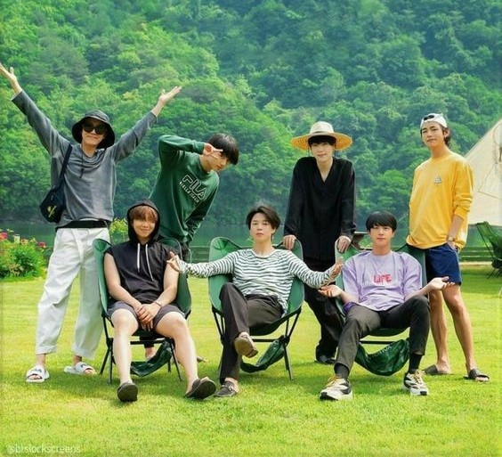
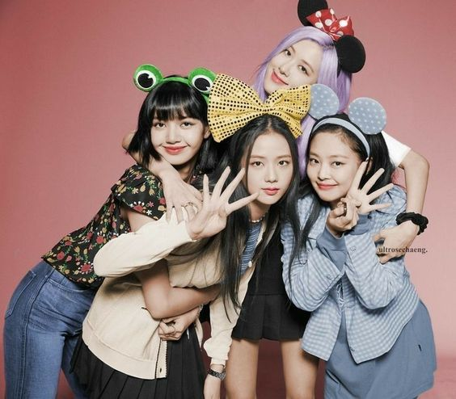

Musical acts made up of attractive and talented young people have been a reliable recipe for success for decades.
One Direction reigned in 2010, the rivalries between Britney Spears and Christina Aguilera defined pop music in the ’90s, and New Kids On The Block was an ‘80s acid wash teen dream. But on November 19, 2017, the K-pop band BTS took to the AMA stage for their first-ever U.S. performance and shook the American music industry.
BTS would go on to set the record for most Twitter engagements, grace the cover of Rolling Stone Magazine, record with Lil Nas X on Old Town Road (Seoul Town Road Remix), sing carpool Karaoke, and solidify their international stardom.
The Korean Wave that started in the ‘80s finally crested over the United States.
It’s been four years since BTS performed at the AMAs and burst into the American mainstream.
But it would be a disservice to the genre to say that K-pop started when BTS burst on the scene.
Our Famous bands
BTS

BTS also known as the Bangtan Boys, is a South Korean boy band formed in 2010 and debuting in 2013 under Big Hit Entertainment. The septet—consisting of members Jin, Suga, J-Hope, RM, Jimin, V, and Jungkook—co-writes and co-produces much of their own material.
Originally a hip hop group, their musical style has evolved to incorporate a wide range of genres; their lyrics have often discussed mental health, the troubles of school-age youth and coming of age, loss, the journey towards self-love, and individualism. Their work also frequently references literature, philosophy and psychological concepts, and includes an alternate universe storyline
The group's many accolades include multiple American Music Awards, Billboard Music Awards, Golden Disc Awards, and nominations for two Grammy Awards. In 2017, they partnered with UNICEF to establish the Love Myself anti-violence campaign, going on to address three sessions of the United Nations General Assembly.
BLACKPINK

Blackpink (commonly stylized as BLɅϽKPIИK) is a South Korean girl group formed by YG Entertainment, consisting of members Jisoo, Jennie, Rosé, and Lisa.
The group debuted in August 2016 with their single album Square One, which featured "Whistle" and "Boombayah", their first number-one entries on South Korea's Gaon Digital Chart and the US Billboard World Digital Song Sales chart, respectively.
Blackpink has broken numerous online records throughout their career. Their music videos for "Kill This Love" (2019) and "How You Like That" (2020) each set records for the most-viewed music video within the first 24 hours of release, with the latter breaking three and setting two Guinness World Records.